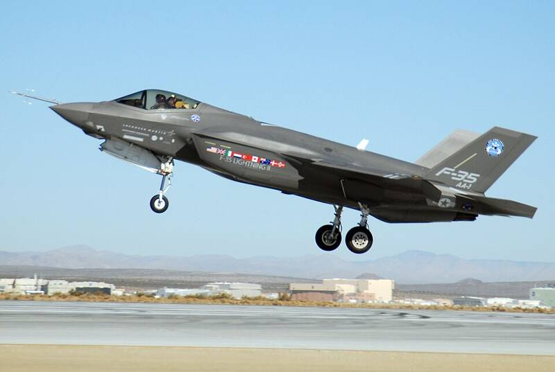

Edwards AFB
California

Air Force flight test center. 1
Open in the interactive Watcher
Related
- Gordon Cooper Person
Sources
- Edwards Air Force Base Wikipedia
California

Air Force flight test center. 1
Open in the interactive Watcher